01 / TRABAJO SEGURO EN ALTURAS
La seguridad empieza antes de subir.
Preparación y revisión de equipos para una práctica responsable.
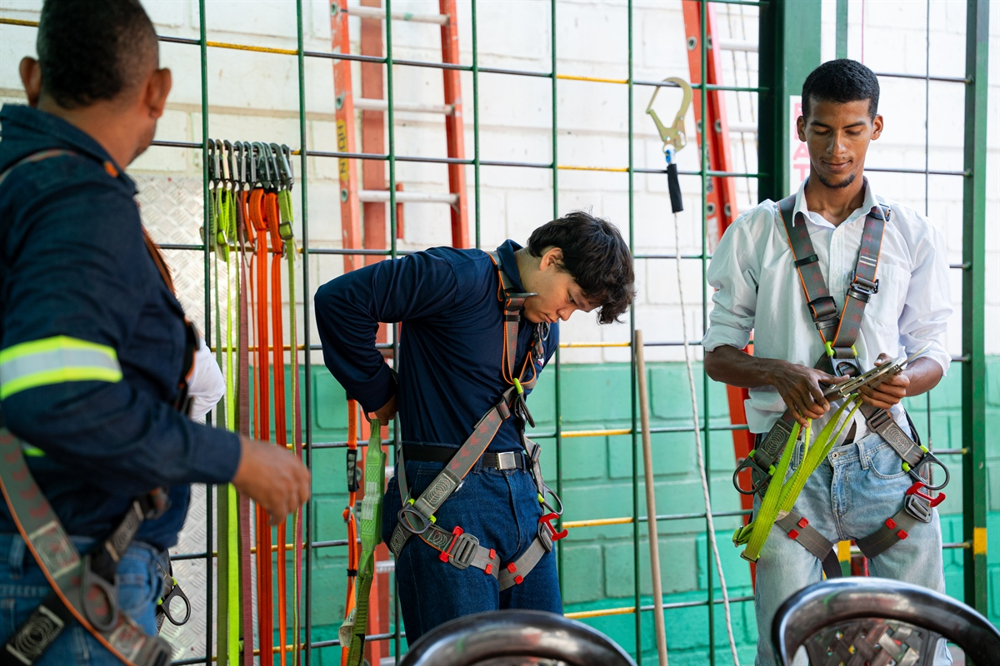
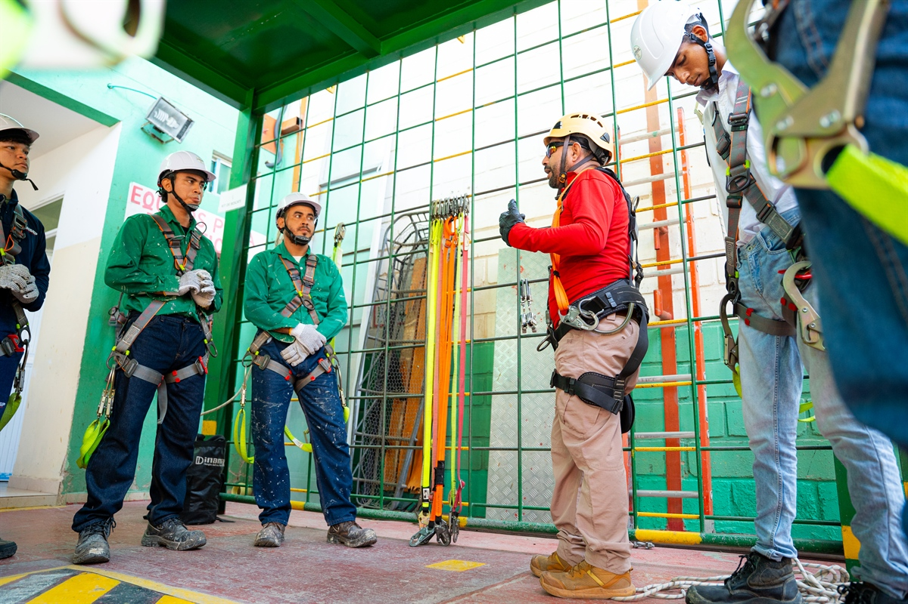
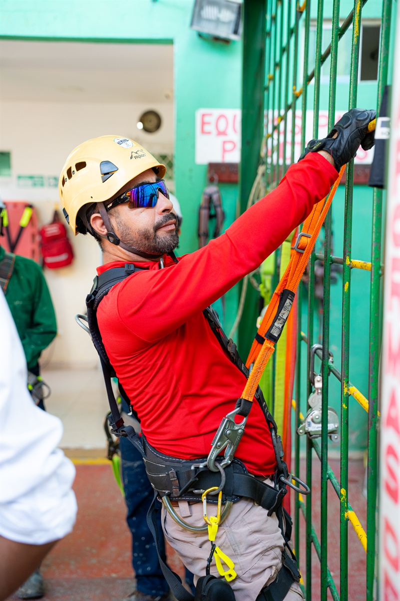
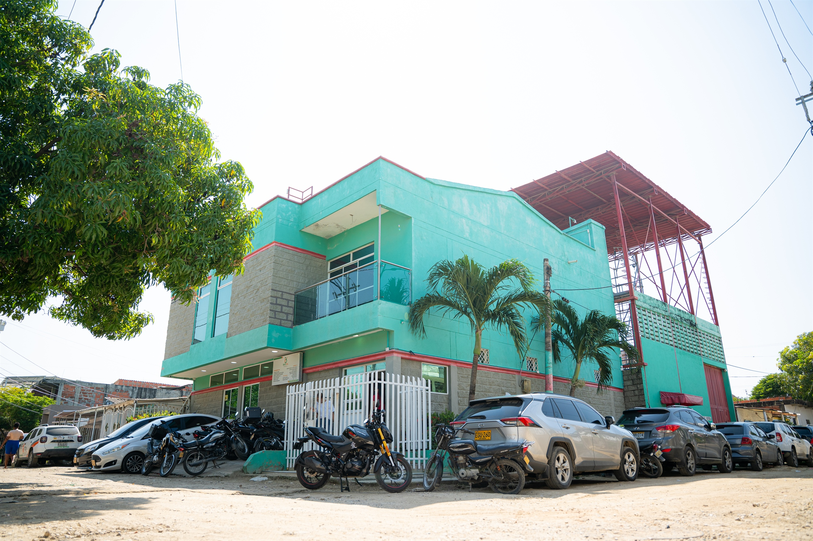
BARVAL PG HSE S.A.S. · FORMACIÓN HSE
Formación en trabajo seguro en alturas, espacios confinados y otras tareas de alto riesgo.
Conoce nuestros serviciosQUIÉNES SOMOS
NUESTRA HISTORIA
Las siglas BARVAL representan los apellidos de nuestra familia: Barbosa Valeta. Nuestro equipo está formado por profesionales idóneos, competentes y responsables, siempre dispuestos a compartir su conocimiento con una atención amable.
Brindamos asesorías y capacitaciones para apoyar la prevención de accidentes y enfermedades laborales. Como centro de entrenamiento en trabajo seguro en alturas, contamos con infraestructura y equipos adecuados para realizar las capacitaciones y entrenamientos requeridos.
Conoce nuestro propósitoFORMACIÓN EN CAMPO
Entrenamientos prácticos en escenarios preparados para cada tarea de alto riesgo.
01 / TRABAJO SEGURO EN ALTURAS
Preparación y revisión de equipos para una práctica responsable.



02 / ESPACIOS CONFINADOS
Práctica de ingreso y maniobras con los elementos de protección requeridos.
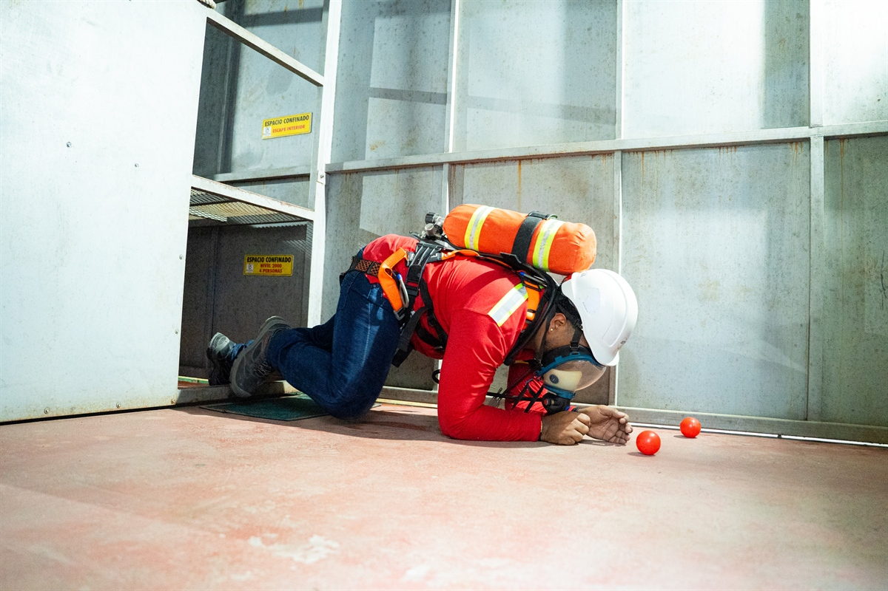
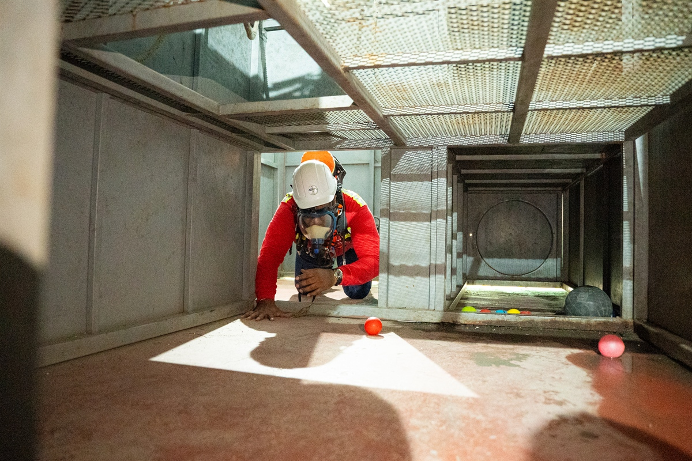
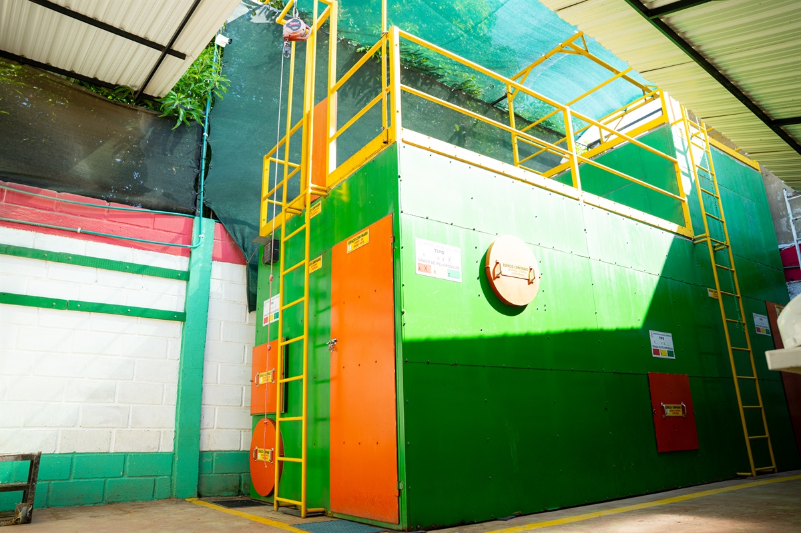
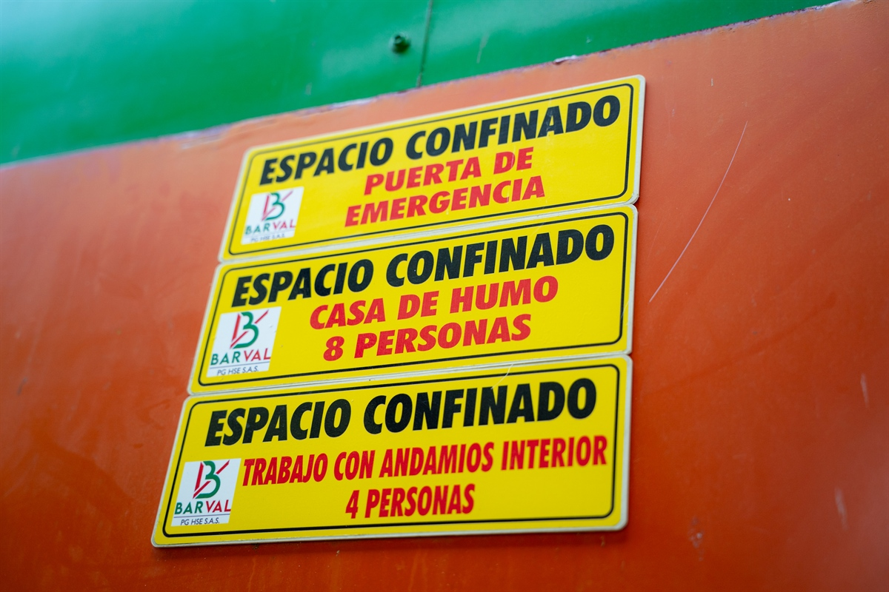
SOMOS BARVAL
Un equipo de profesionales comprometidos que acompaña cada proceso con conocimiento, responsabilidad y cercanía.
01 / MISIÓN
Ofrecemos servicios de asesoría integral y especializada en tareas de alto riesgo y Seguridad y Salud en el Trabajo. Lideramos procesos con técnicas aplicativas que contribuyen a evitar incidentes.
02 / VISIÓN 2030
Proyectamos a BARVAL PG HSE S.A.S. como una empresa líder a nivel nacional en la implementación y seguimiento de la Seguridad y Salud en el Trabajo y el control de tareas de alto riesgo, con personal comprometido y altos estándares de calidad.
LO QUE HACEMOS
Capacitación y asesoría para personas y equipos que realizan labores críticas.
| Cargo | Examen médico ocupacional | Examen médico en alturas (vigente ≤ 1 año) | Seguridad social vigente | Curso de alturas de 32 o 40 horas | Certificado de alturas vigente | Experiencia en alturas: mínimo 1 año / 50 horas de SG-SST |
|---|---|---|---|---|---|---|
| Trabajador autorizado | ✓ | ✓ | ||||
| Reentrenamiento | ✓ | ✓ | ✓ | |||
| Coordinador en alturas | ✓ | ✓ | ✓ | ✓ | ||
| Jefe de área | ✓ | ✓ |
| Cargo | Documento de identidad | Examen médico en espacios confinados (vigente ≤ 1 año) | Examen médico en espacios confinados (vigente ≤ 6 meses) | Seguridad social | Curso de alturas vigente | Curso de trabajador entrante vigente | Curso de vigía vigente | Competencia de lectoescritura | Título profesional en SST o posgrado y licencia en SST |
|---|---|---|---|---|---|---|---|---|---|
| Trabajador entrante | ✓ | ✓ | ✓ | ✓ | |||||
| Vigía | ✓ | ✓ | ✓ | ✓ | ✓ | ||||
| Supervisor | ✓ | ✓ | ✓ | ✓ | ✓ | ✓ | |||
| Administrador del programa | ✓ | ✓ | ✓ |
| Capacitación | Seguridad social | Curso de alturas vigente |
|---|---|---|
| Rescate básico, avanzado y andamios | ✓ | ✓ |
Los requisitos para asesorías, inspecciones y alquiler de equipos dependen del servicio solicitado.
Para mayor información, haz clic aquíACCIÓN INMEDIATA
Cuéntanos qué capacitación o asesoría necesitas.
VALOR DIFERENCIAL
Años de experiencia
Enfoque en tareas de alto riesgo
Una visión de crecimiento nacional
Entrenamiento orientado a los riesgos de las tareas críticas y a la prevención de incidentes.
Infraestructura y equipos para capacitaciones en trabajo seguro en alturas.
Profesionales competentes y comprometidos con el servicio y los requisitos de calidad.
NUESTROS ESPACIOS
Escenarios de práctica y espacios de formación para desarrollar competencias en tareas de alto riesgo.
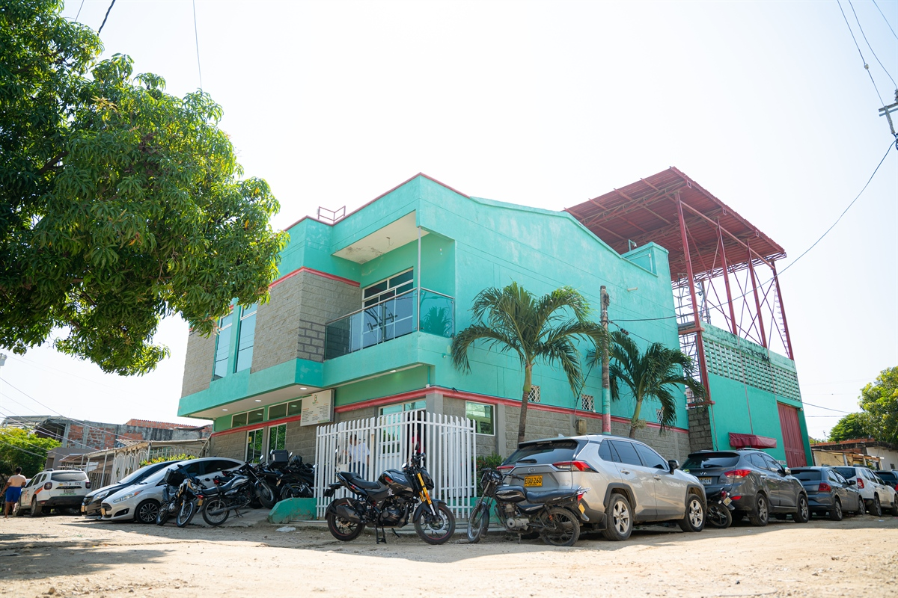
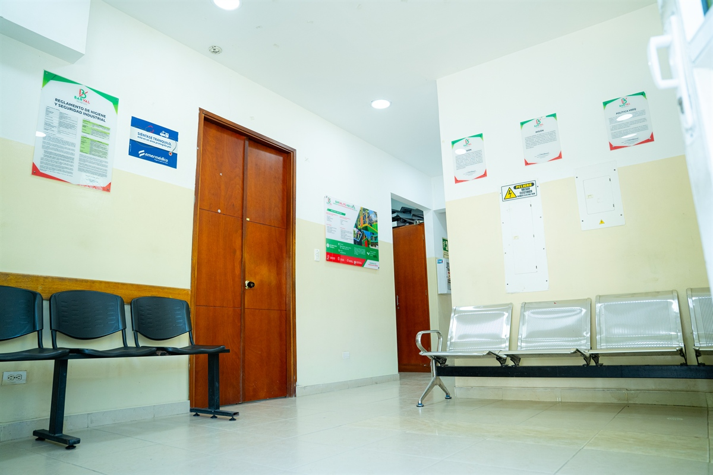
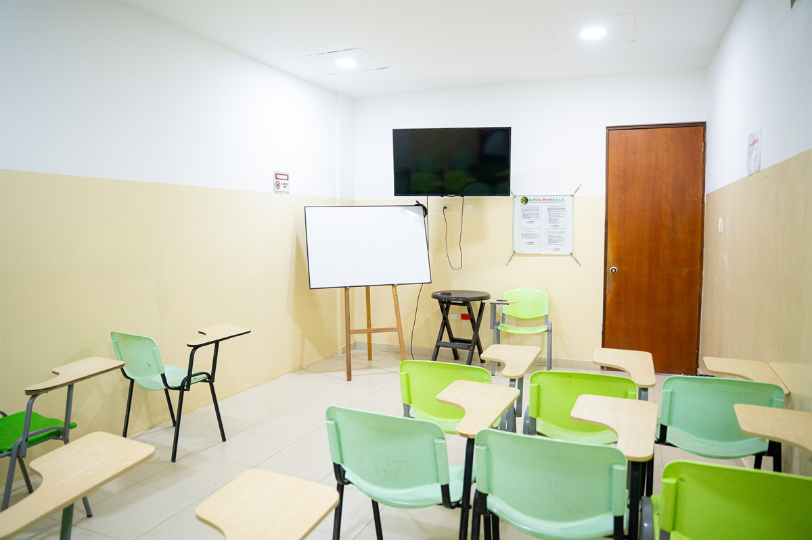
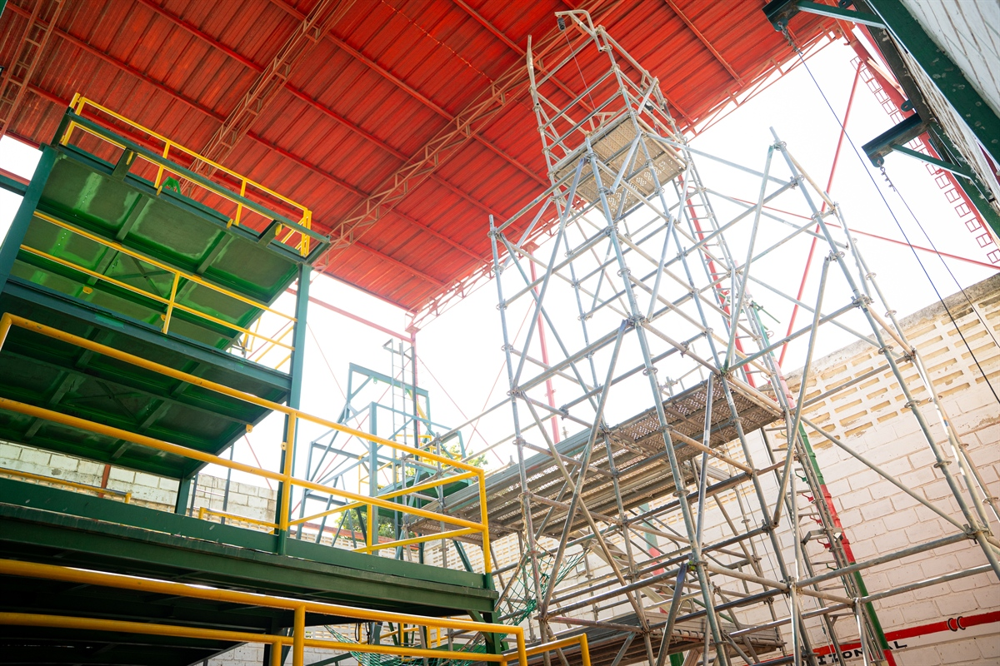
RESPALDO Y CALIDAD
Centro de formación para trabajo en alturas y espacios confinados, avalado por el Ministerio del Trabajo. BARVAL PG HSE S.A.S. también cuenta con certificación ICONTEC bajo la NTC 6072.